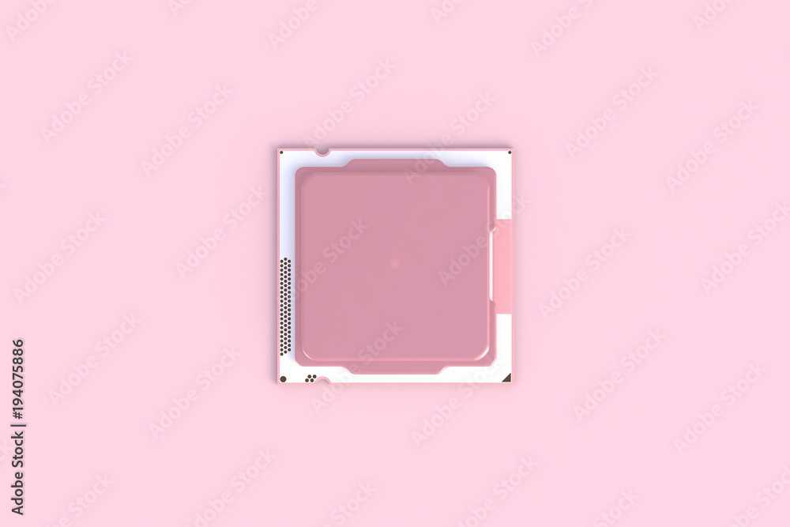
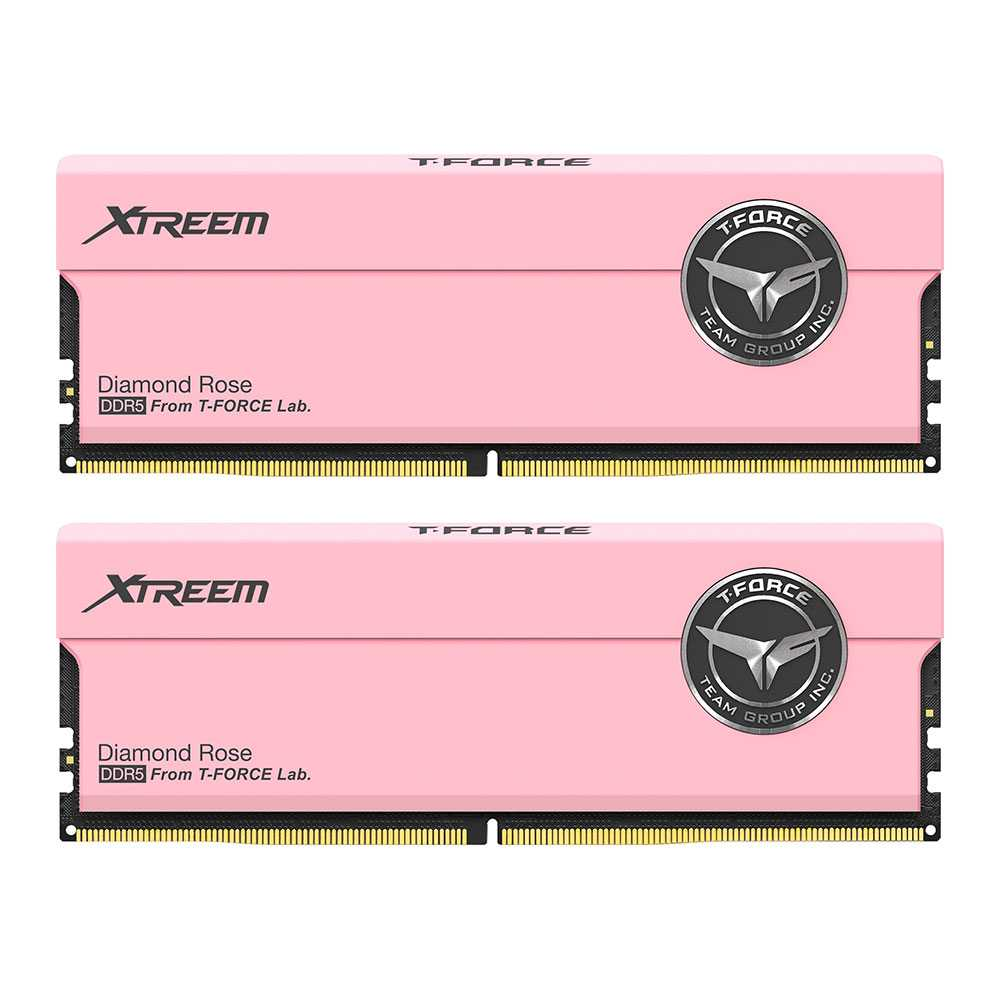
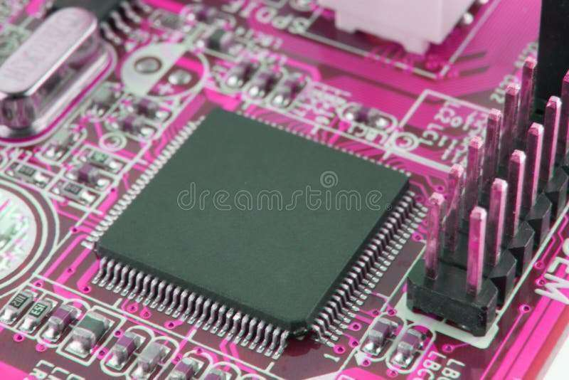
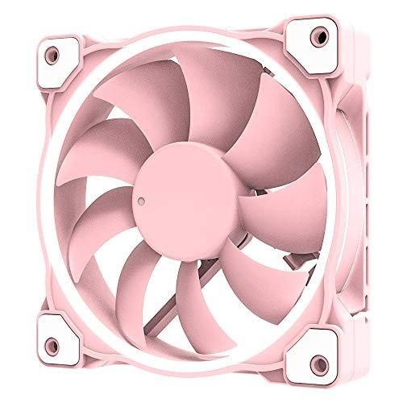

Welcome to our site

Click to learn
The CPU (Central Processing Unit) is like the brain of your computer. It carries out the instructions from programs, handles calculations, and directs other parts of the computer to get things done. At its core, the CPU consists of a few key parts: ALU (Arithmetic Logic Unit): Does math and logical operations. Control Unit (CU): Tells the CPU what to do and when. Registers: Temporary storage for data the CPU is currently using. Cache: Super-fast memory that stores frequently used data to speed things up. The CPU works in cycles: it fetches an instruction, decodes it, executes it, and then writes the result back. This happens incredibly fast, often billions of times per second. CPU performance depends on factors like clock speed (how fast it runs) and how many cores it has (which allows it to handle multiple tasks at once). The more cores, the better it can multitask.
Click to learn
RAM (Random Access Memory) is like your computer's short-term memory. It stores data that your computer is actively using, so the processor can access it quickly. When you open an app or file, it’s loaded into RAM because it’s faster to access than data on your hard drive or SSD. RAM helps your computer run smoothly, especially when multitasking. The more RAM you have, the more programs your computer can handle at once without slowing down. But remember, RAM is temporary—once you turn off the computer, everything in RAM is lost. Think of it like this: If you’re doing a project, you keep your tools and materials on your desk (RAM) so you can grab them easily. If your desk gets too small (not enough RAM), you’ll start putting things on the floor (your hard drive), which slows you down.
Click to learn
The motherboard is the main board in your computer that connects everything together and allows them to communicate. It holds key parts like the CPU (the brain), RAM (temporary memory), and provides slots for things like storage drives (HDD/SSD) and expansion cards (graphics or sound cards). It also handles power distribution, making sure every component gets the right amount of electricity. The motherboard has ports for connecting peripherals (USB, HDMI, etc.) and routes data between all the components. In short, it’s the central hub that makes sure your computer’s parts can work together and function properly.
Click to learn
A hard drive (HDD) is a storage device in your computer that holds your operating system, applications, and files. Inside, it has spinning disks (called platters) coated with magnetic material. A read/write head moves across the platters to store or access data by magnetizing spots on the surface. HDDs offer large storage capacities and are cheaper than newer storage options like solid-state drives (SSDs), but they’re slower because of the moving parts. HDDs are great for storing large amounts of data, but they're more prone to wear and damage due to their mechanical nature. While SSDs are faster and more durable, hard drives remain popular for bulk storage because of their lower cost per gigabyte.
Click to learn
An ICT cooling fan is a fan used in Information and Communication Technology equipment to prevent overheating by maintaining optimal temperatures. Devices like servers, network switches, and other computing equipment generate heat from high processing demands. If this heat isn't managed, it can lead to system failures or reduced performance, which is why cooling fans are essential. These fans work by moving air through the device—pulling in cool air and pushing out hot air. The fans are often strategically placed near components like the CPU or power supply, where heat is most concentrated. Many fans also have temperature sensors and adjust their speed based on how hot the system is, increasing airflow when needed. In high-performance setups, like data centers, multiple cooling fans may be used to ensure proper airflow and keep temperatures under control. They come in different types, such as axial fans (which blow air in one direction) or blower fans (which create more focused airflow). Proper cooling helps maintain system stability, efficiency, and prolongs hardware life.

•Apr 22, 2007
•Putingkahoy, Silang Cavite
•10 Halcon
•August 31, 2009
•Purok1 Santo Domingo Santa Rosa, Laguna
•10 Halcon

•September 28,2009
•Purok 6 Carmen, Silang, Cavite
•10 Halcon
•July 13,2009
•Hoyo, Silang, Cavite
•10 Halcon
•April 17,2009
•Puting Kahoy, Silang Cavite
•10 Halcon